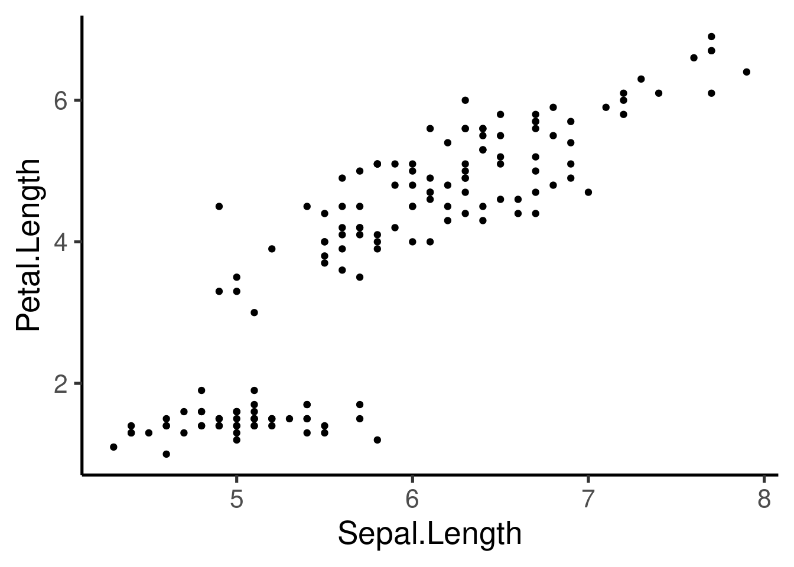
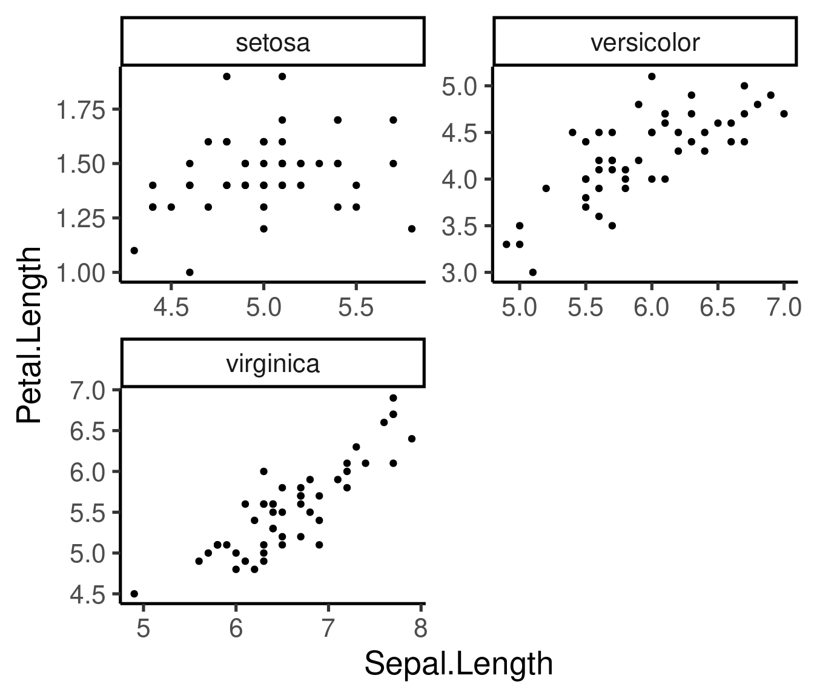
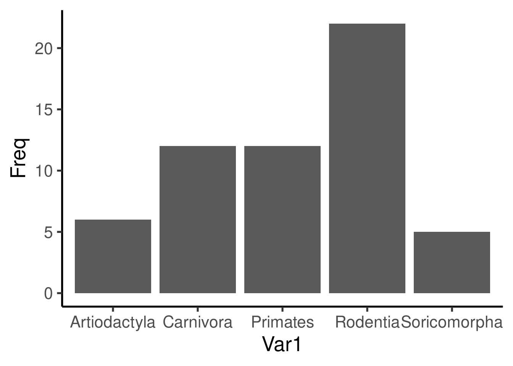
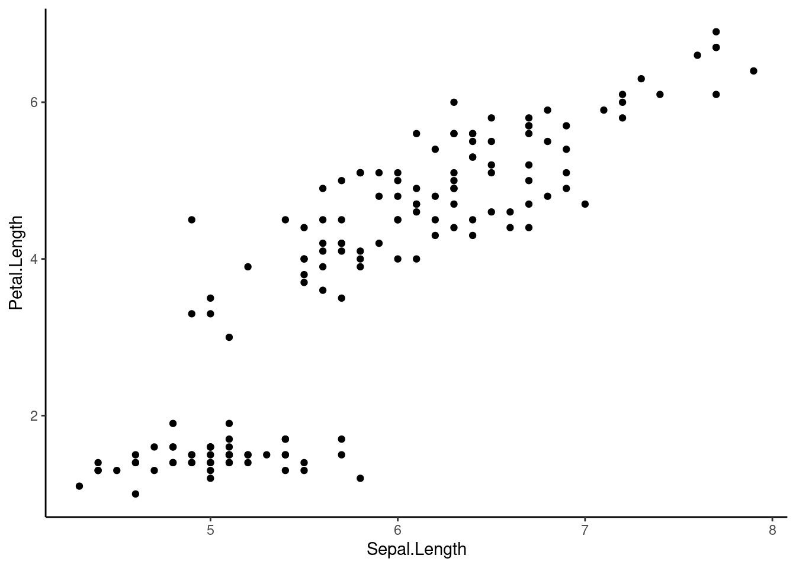
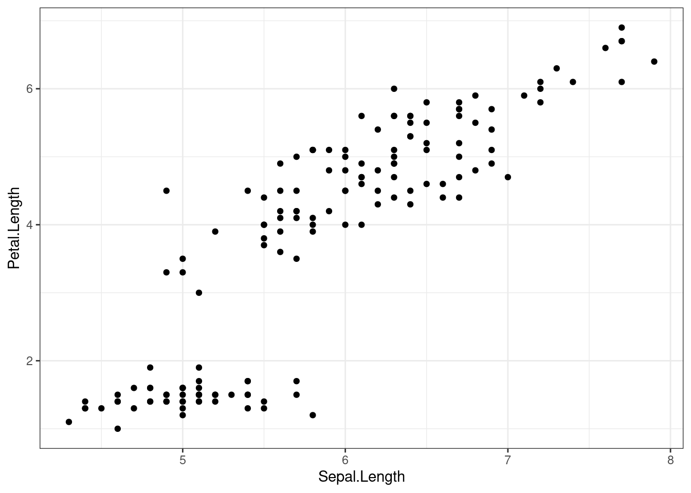
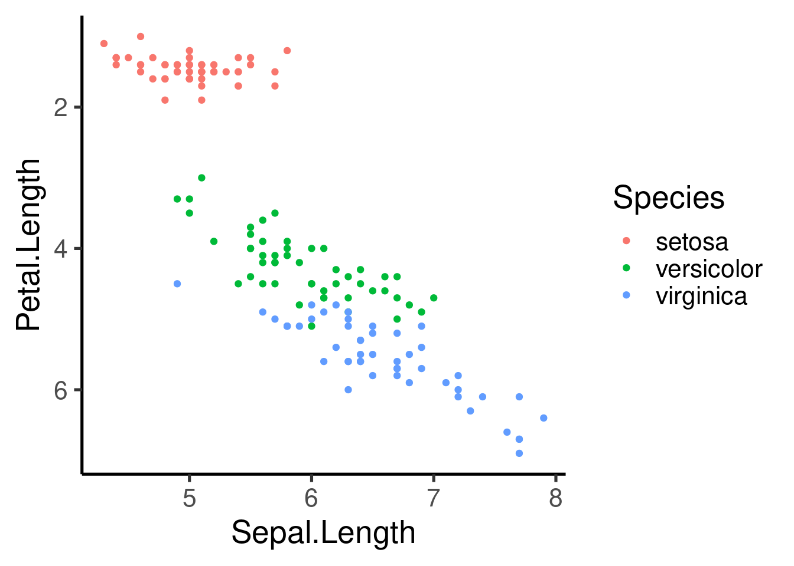
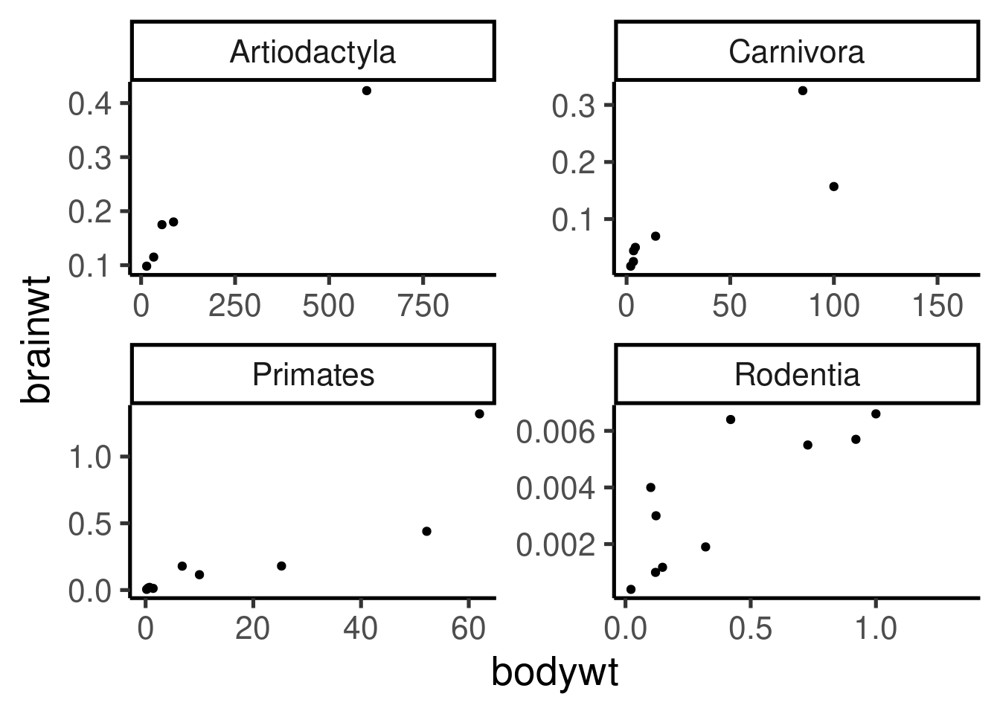
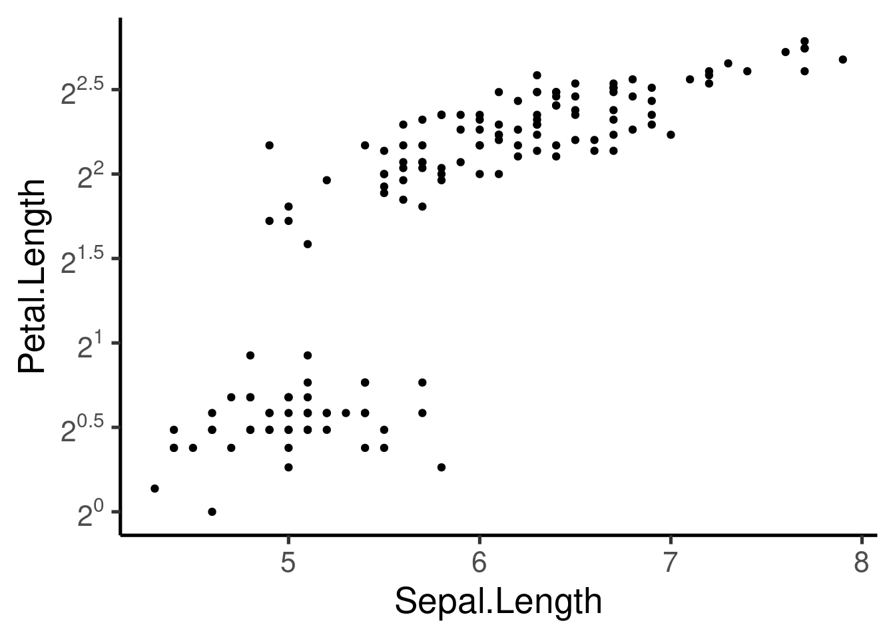
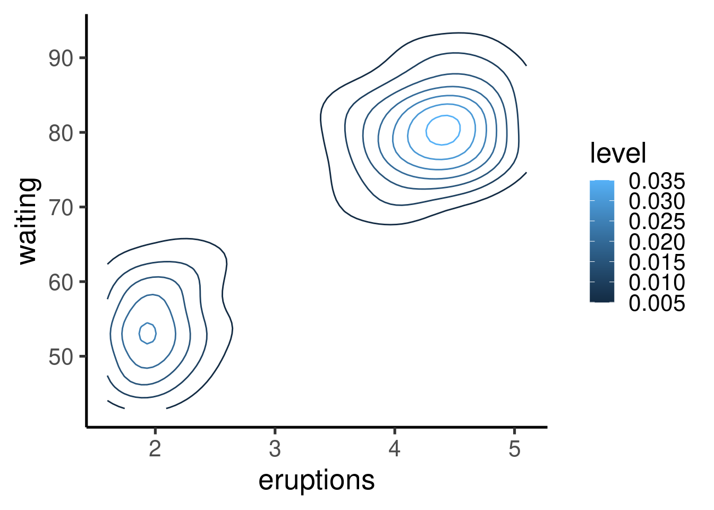

Code
# install
install.packages("ggplot2")
# load library
library(ggplot2)An R package specifically designed to produce graphics
Unlike other packages, ggplot2 has its own grammar
The grammar is based on “Grammar of Graphics” (Wilkinson 2005)
Independent modules that can be combined in many forms
This grammar provides high flexibility
The main idea is to start with a base layer of raw data and then add more layers of annotations and statistical summaries. The package allows us to produce graphics using the same structure of thought that we use when designing an analysis, reducing the distance of how we visualize a graphic in the head and the final product.
Learning the grammar will not only be crucial to produce a graph of interest, but also to think about other more complex graphs. The advantage of this grammar is the possibility to create new graphs composed of new combinations of elements.
All ggplot2 graphs contain the following components:
This components are put together using “+”.
The most common syntax includes the data within the “ggplot” call and a “geom_” layer.
First install/load the package:
# install
install.packages("ggplot2")
# load library
library(ggplot2)
Let’s use the “iris” data set to create scatter plots:
ggplot(data = iris, mapping = aes(x = Sepal.Length, y = Petal.Length)) +
geom_point()
This plot is defined by 3 components: 1. “data”- iris 1. “aes” - Sepal.length vs Petal.length 1. “layer” - Points (geom)
We can also add other aesthetic attributes like color, shape and size. This attributes can be included within aes():
# color by species
ggplot(data = iris, mapping = aes(x = Sepal.Length, y = Petal.Length,
color = Species)) + geom_point()
# color and shape by species
ggplot(data = iris, mapping = aes(x = Sepal.Length, y = Petal.Length,
color = Species, shape = Species)) + geom_point()
Note that the aesthetic arguments can also be included in the “geom” layer:
ggplot(data = iris, mapping = aes(x = Sepal.Length, y = Petal.Length)) +
geom_point(aes(color = Species, shape = Species))
We can also include a fixed value:
ggplot(data = iris, mapping = aes(x = Sepal.Length, y = Petal.Length)) +
geom_point(color = "red2")
Some attributes work better with some data types:
Exercise 1
Using the “hylaeformis” data set (it can also be downloaded here):
# read from website
hylaeformis_data <- read.csv("https://raw.githubusercontent.com/maRce10/OTS_Tropical_Biology_2023/master/data/hylaeformis_data.csv",
stringsAsFactors = FALSE)
# if download manually read it from the local file
# hylaeformis_data <- read.csv('hylaeformis_data.csv',
# stringsAsFactors = FALSE)
head(hylaeformis_data, 20)1.1 Create a scatter plot of “duration” vs “meanfreq” (mean frequency)
1.2 Add a aesthetic attribute to show a different color for each locality
1.3 Add another aesthetic attribute to show “dfrange” (dominant frequency range) as the shape size
ggplot(iris, aes(Sepal.Length, Petal.Length)) + geom_point() + facet_wrap(~Species)
# or
ggplot(iris, aes(Sepal.Length, Petal.Length)) + geom_point() + facet_grid(~Species)
The scale can be fixed or free for the x and y axis, and the number of columns and rows can be modified:
# free x
ggplot(iris, aes(Sepal.Length, Petal.Length)) + geom_point() + facet_wrap(~Species,
scales = "free_x")# free x and 3 rows
ggplot(iris, aes(Sepal.Length, Petal.Length)) + geom_point() + facet_wrap(~Species,
scales = "free_y", nrow = 3)
# both free and 2 rows
ggplot(iris, aes(Sepal.Length, Petal.Length)) + geom_point() + facet_wrap(~Species,
scales = "free", nrow = 2)
Note that we can also saved the basic component as an R object and add other components later in the code:
p <- ggplot(iris, aes(Sepal.Length, Petal.Length)) + geom_point()
p + facet_wrap(~Species, scales = "free_x", nrow = 3)
geom_smooth() - adds best fit lines (including CI)geom_boxplot()geom_histogram() & geom_freqpoly() - frequency distributionsgeom_bar() - frequency distribution of categorical variablesgeom_path() & geom_line() - add lines to scatter plots
Best fit regression lines can be added with geom_smooth():
# smoother and CI
ggplot(iris, aes(Sepal.Length, Petal.Length)) + geom_point() + geom_smooth(method = "lm") +
facet_wrap(~Species, scales = "free", nrow = 3)
# without CI
ggplot(iris, aes(Sepal.Length, Petal.Length)) + geom_point() + geom_smooth(method = "lm",
se = FALSE) + facet_wrap(~Species, scales = "free", nrow = 3)
Exercise 2
Using the “msleep” example data set:
2.1 Create a scatter plot of “bodywt”(body weight) vs “brainwt” (brain weight)
2.2 Add “order” as a color aesthetic
2.3 Add a “facet” component to split plots by order using free scales
2.4 Remove the orders with less than 4 species in the data set and make a plot similar to 2.3
2.5 Add a smooth line to each plot in the panel
Again, it only takes a new “geom” component to create a boxplot:
ggplot(iris, aes(Species, Petal.Length)) + geom_boxplot()An interesting alternative are the violin plots:
ggplot(iris, aes(Species, Petal.Length)) + geom_violin()
Same thing with histrograms and frequency plots:
ggplot(iris, aes(Petal.Length)) + geom_histogram()
ggplot(iris, aes(Petal.Length)) + geom_freqpoly()ggplot(iris, aes(Petal.Length)) + geom_histogram() + geom_freqpoly()
We can control the width of the bars:
ggplot(iris, aes(Petal.Length)) + geom_histogram(binwidth = 1, fill = adjustcolor("red2",
alpha.f = 0.3))Warning: Duplicated aesthetics after name standardisation: fill
And compare the distribution of different groups within the same histogram:
ggplot(iris, aes(Petal.Length, fill = Species)) + geom_histogram(binwidth = 0.4)
Show the distribution of discrete (categorical) variables:
tab <- table(msleep$order)
df <- as.data.frame(table(msleep$order[msleep$order %in% names(tab)[tab >
3]]))
ggplot(df, aes(Var1, Freq)) + geom_bar(stat = "identity")
Besides the basic functions (e.g. components) described above, ggplot has many other tools (both arguments and additional functions) to further customize plots. Pretty much every thing can be modified. Here we see some of the most common tools.
ggplot2 comes with some default themes that can be easily applied to modified the look of our plots:
p <- ggplot(iris, aes(Sepal.Length, Petal.Length)) + geom_point()
p + theme_classic()
p + theme_bw()
p + theme_minimal()
Most themes differ in the use of grids, border lines and axis labeling patterns.
Axis limits can be modified as follows:
ggplot(iris, aes(Sepal.Length, Petal.Length)) + geom_point() + xlim(c(0,
10))ggplot(iris, aes(Sepal.Length, Petal.Length, col = Species)) + geom_point() +
xlim(c(0, 10)) + ylim(c(0, 9))
Axis can also be transformed:
ggplot(iris, aes(Sepal.Length, Petal.Length, col = Species)) + geom_point() +
scale_x_continuous(trans = "log") + scale_y_continuous(trans = "log2")
or reversed:
ggplot(iris, aes(Sepal.Length, Petal.Length, col = Species)) + geom_point() +
scale_y_reverse()
ggplots can be exported as image files using the ggsave function:
ggplot(data = msleep[msleep$order %in% names(tab)[tab > 5], ], mapping = aes(x = bodywt,
y = brainwt)) + geom_point() + facet_wrap(~order, scales = "free")Warning: Removed 21 rows containing missing values or values outside the scale range
(`geom_point()`).
# Export
ggsave("plot.png", width = 5, height = 5)Warning: Removed 21 rows containing missing values or values outside the scale range
(`geom_point()`).
The image file type will be identify by the extension in the file name
Additional axis customizing:
# Log2 scaling of the y axis (with visually-equal spacing)
require(scales)
p + scale_y_continuous(trans = log2_trans())# show exponents
p + scale_y_continuous(trans = log2_trans(), breaks = trans_breaks("log2",
function(x) 2^x), labels = trans_format("log2", math_format(2^.x)))
# Percent
p + scale_y_continuous(labels = percent)
# dollar
p + scale_y_continuous(labels = dollar)
# scientific
p + scale_y_continuous(labels = scientific)### Agregar 'tick marks' ###
# Cargar librerías
library(MASS)
data(Animals)
# x and y axis are transformed and formatted
p2 <- ggplot(Animals, aes(x = body, y = brain)) + geom_point(size = 4) +
scale_x_log10(breaks = trans_breaks("log10", function(x) 10^x),
labels = trans_format("log10", math_format(10^.x))) + scale_y_log10(breaks = trans_breaks("log10",
function(x) 10^x), labels = trans_format("log10", math_format(10^.x))) +
theme_bw()
# log-log plot without log tick marks
p2
# Show log tick marks
p2 + annotation_logticks()
# # Log ticks on left and right
p2 + annotation_logticks(sides = "lr")
# All sides
p2 + annotation_logticks(sides = "trbl")
Many other types of graphs can be generated. Here I show a single example of cool contour and “heatmap” graphs:
head(faithful)| eruptions | waiting |
|---|---|
| 3.60 | 79 |
| 1.80 | 54 |
| 3.33 | 74 |
| 2.28 | 62 |
| 4.53 | 85 |
| 2.88 | 55 |
ggplot(faithfuld, aes(eruptions, waiting)) + geom_contour(aes(z = density,
colour = ..level..))Warning: The dot-dot notation (`..level..`) was deprecated in ggplot2 3.4.0.
ℹ Please use `after_stat(level)` instead.
ggplot(faithfuld, aes(eruptions, waiting)) + geom_raster(aes(fill = density))
Check the CRAN Graphics Task View for a more comprehensive list of graphical tools in R.
Session information
R version 4.3.2 (2023-10-31)
Platform: x86_64-pc-linux-gnu (64-bit)
Running under: Ubuntu 22.04.2 LTS
Matrix products: default
BLAS: /usr/lib/x86_64-linux-gnu/blas/libblas.so.3.10.0
LAPACK: /usr/lib/x86_64-linux-gnu/lapack/liblapack.so.3.10.0
locale:
[1] LC_CTYPE=en_US.UTF-8 LC_NUMERIC=C
[3] LC_TIME=en_US.UTF-8 LC_COLLATE=en_US.UTF-8
[5] LC_MONETARY=en_US.UTF-8 LC_MESSAGES=en_US.UTF-8
[7] LC_PAPER=en_US.UTF-8 LC_NAME=C
[9] LC_ADDRESS=C LC_TELEPHONE=C
[11] LC_MEASUREMENT=en_US.UTF-8 LC_IDENTIFICATION=C
time zone: America/Costa_Rica
tzcode source: system (glibc)
attached base packages:
[1] stats graphics grDevices utils datasets methods base
other attached packages:
[1] scales_1.3.0 viridis_0.6.5 viridisLite_0.4.2 MASS_7.3-55
[5] RColorBrewer_1.1-3 ggplot2_3.5.1 knitr_1.48 kableExtra_1.4.0
loaded via a namespace (and not attached):
[1] utf8_1.2.4 generics_0.1.3 xml2_1.3.6 stringi_1.8.4
[5] lattice_0.20-45 digest_0.6.37 magrittr_2.0.3 evaluate_0.24.0
[9] grid_4.3.2 fastmap_1.2.0 jsonlite_1.8.8 Matrix_1.6-5
[13] formatR_1.14 gridExtra_2.3 mgcv_1.8-39 fansi_1.0.6
[17] isoband_0.2.7 textshaping_0.3.7 cli_3.6.3 rlang_1.1.4
[21] munsell_0.5.1 splines_4.3.2 withr_3.0.1 yaml_2.3.10
[25] tools_4.3.2 dplyr_1.1.4 colorspace_2.1-1 vctrs_0.6.5
[29] R6_2.5.1 lifecycle_1.0.4 stringr_1.5.1 htmlwidgets_1.6.4
[33] ragg_1.2.7 pkgconfig_2.0.3 pillar_1.9.0 gtable_0.3.5
[37] glue_1.7.0 systemfonts_1.1.0 xfun_0.47 tibble_3.2.1
[41] tidyselect_1.2.1 highr_0.11 rstudioapi_0.16.0 farver_2.1.2
[45] htmltools_0.5.8.1 nlme_3.1-155 rmarkdown_2.28 svglite_2.1.3
[49] labeling_0.4.3 compiler_4.3.2